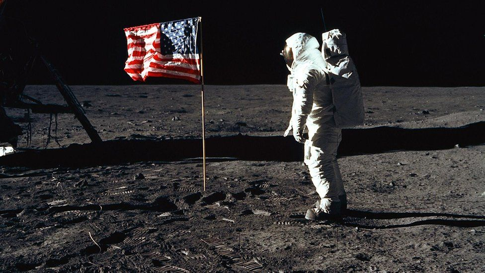

3 56 am: man steps on to the moon
Category: Social News, Tech News, NASA, Space
Originally published on 20 Jul 1969. Most recent update: 21 Jul 1969.

Astronaut Edwin E Aldrin poses for a photograph beside the U.S. flag deployed on the Moon during the Apollo 11 mission on July 20, 1969. Photo: Neil Armstrong/AP
Men are on the moon. At 3 56 this morning Armstrong stepped from the lunar module and set foot on lunar ground. It was the fulfilment of a dream which men have shared since the beginning of recorded history. Aldrin followed his commander down the steps of the lander – already named Tranqufllity Base – 19 minutes later.
Armstrong reported that the surfac seemed to a very fine powder into which his feet sank about one-eighth of an inch. He could see his footprints clearly.
Armstrong's first words on the.moon were: "That's one small step for man. One giant leap for mankind." The first television view millions on earth saw was Armstrong's foot descending slowly, then there was his full figure.
"It's a very soft surface, but hore and, there where I poke with the sample collector I run into a very hard surface," he said, "It appears to be the same materlal." The moon "has a harsh beauty all its own." Aldrin reported. "It looks like the desert of the United States, but it is very beautiful."
Aldrin experimented with movement in the low gravity, and remarked that a moonwalker had to be careful to lean in the direction he wanted to go or he would lurch around "like someone slightly inebrlated." When they started to examine their surroundings Aldrin reported finding a purple rock.
The decision to walk early wae mode three hours after the lunar module Eagle had made a perfect landing at 9 17 p.m. four miles downrange from the chosen site. The spacecraft was steered manually to clear a boulder strewn crater "the size of a football field." It was a moment of extraordinary tension and silence. The lunar module carved gently down over the Sea of Tranquillity, its drama heightened by the calm, almost casual voices of the astronauts and the mission controller at Houston.